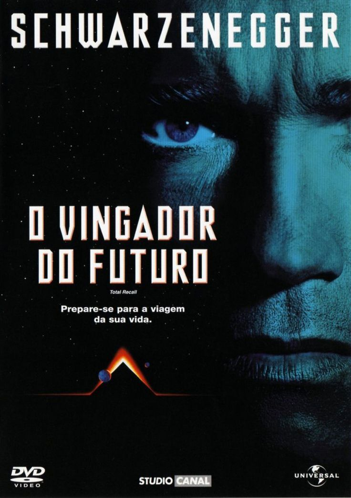

| Série | ||||||||||||
|---|---|---|---|---|---|---|---|---|---|---|---|---|
| Capa | Titulo | Gênero | Data | |||||||||
 |
Loki | Ficção Cientifica | 2021-2023 | |||||||||
| Filme | ||||||||||||
|---|---|---|---|---|---|---|---|---|---|---|---|---|
| Capa | Titulo | Gênero | Data | |||||||||
|  | O Vingador do Futuro | Ficção Cientifica | 1990 | |||||||||
“O Vingador do Futuro” é um filme de ação e ficção científica que prende a atenção desde os primeiros minutos. A trama acompanha Doug Quaid, um homem comum que decide experimentar um serviço capaz de implantar memórias falsas, mas acaba descobrindo que sua própria identidade pode ser uma grande mentira. A partir daí, a história se desenrola em ritmo acelerado, cheia de dúvidas e reviravoltas.
O filme se destaca pela mistura de ação intensa com um enredo cheio de mistério. As cenas são bem construídas, com efeitos especiais marcantes para a época, e a narrativa mantém o público sempre curioso sobre o que é real e o que é apenas uma memória implantada. Esse clima de incerteza torna a experiência ainda mais envolvente.
Recomendo “O Vingador do Futuro” para quem gosta de filmes que combinam aventura, tecnologia e suspense. É uma obra que diverte e faz pensar ao mesmo tempo, explorando temas como identidade e controle da mente. Mesmo após tantos anos de seu lançamento, continua sendo um clássico da ficção científica que vale a pena assistir.
| Série | ||||||||||||
|---|---|---|---|---|---|---|---|---|---|---|---|---|
| Capa | Titulo | Gênero | Data | |||||||||
|
Loki | Ficção Cientifica | 2021-2023 | |||||||||
A série “Loki” é uma das produções mais criativas do universo Marvel, trazendo uma nova perspectiva sobre o famoso Deus da Trapaça. A história começa após os eventos de “Vingadores: Ultimato”, quando Loki escapa com o Tesseract e acaba sendo capturado pela AVT, uma organização responsável por proteger a linha do tempo. A partir daí, ele é forçado a confrontar seu próprio passado e suas escolhas.
O grande destaque da série é a forma como mistura humor, ação e elementos de ficção científica. Os diálogos são inteligentes, os cenários são visualmente impressionantes e a trama explora conceitos como realidades alternativas e destino. Recomendo MUITOO!
| Anime | ||||||||||||
|---|---|---|---|---|---|---|---|---|---|---|---|---|
| Capa | Titulo | Gênero | Data | |||||||||
 |
Hunter-X-Hunter | Shounen, Drama | 2011-2014 | |||||||||
Hunter x Hunter é um baita de anime que se destaca pela combinação de aventura, emoção e profundidade narrativa. A história acompanha Gon Freecss, um garoto determinado a se tornar um 'Hunter' para encontrar seu pai, o que o leva a conhecer novos amigos e enfrentar desafios cada vez maiores. Desde o começo, a série prende pela simplicidade da motivação e pela força do desenvolvimento dos personagens.
Um dos maiores pontos fortes do anime é o mundo rico e bem construído. Cada arco apresenta regras próprias, novos cenários e ameaças que exigem inteligência, estratégia e evolução constante dos protagonistas. As lutas não dependem apenas de força física, mas também de raciocínio e criatividade, o que torna cada confronto único e imprevisível.
Recomendo esse anime de mais para quem busca uma história profunda, cheia de reviravoltas e personagens marcantes. Mesmo tratando de temas sérios e emocionantes, o anime consegue manter um equilíbrio entre ação, humor e dramaticidade. É uma obra que cativa e permanece na memória muito tempo depois de assistida.
| Mangá | ||||||||||||
|---|---|---|---|---|---|---|---|---|---|---|---|---|
| Capa | Titulo | Gênero | Data | |||||||||
 |
JJBA-Steel Ball Run | Sobrenatural | 2004-2011 | |||||||||
Steel Ball Run se passa nos Estados Unidos no final do século XIX e acompanha uma corrida continental a cavalo, com competidores cruzando o país em busca do grande prêmio. Entre eles está Johnny Joestar, um jovem ex-jóquei que perdeu o movimento das pernas e vê na corrida uma chance de recuperar sua dignidade, e talvez a própria capacidade de andar. Ele se une a Gyro Zeppeli, um misterioso competidor que utiliza a técnica das “Steel Balls” (a terceira bola do Gyro).
O bom desse mangá é sua história incrivel e cheio de bizarrizes que só um louco faria. A cada etapa da corrida apresenta perigos inesperados, rivais fortes e desafios que exigem habilidade e inteligência. É aqui também que surgem Stands com poderes únicos, usados de forma extremamente criativa, elevando tanto a ação quanto a tensão da trama. A relação entre Johnny e Gyro se destaca como um dos elementos mais marcantes e emocionantes da parte.
Recomendo Steel Ball Run para quem busca uma narrativa madura, cheia de suspense, emoção e personagens inesquecíveis e muita loucura. Considerada por muitos uma das melhores partes de JoJo, ela combina drama, humor, ação e momentos profundamente impactantes. É uma jornada intensa e bem construída, capaz de prender o leitor do início ao fim.
Skyrim é um RPG de mundo aberto que se passa na província gelada de mesmo nome, onde dragões retornam após séculos e ameaçam todo o continente. O jogador assume o papel do Dragonborn, um herói com a habilidade de absorver almas de dragões e usar poderosos Shouts. A jornada principal envolve descobrir sua verdadeira natureza enquanto enfrenta conflitos políticos, criaturas perigosas e segredos antigos.
É possível seguir a história principal, unir-se a facções como a Guilda dos Ladrões ou os Companheiros, aprender magia no Colégio de Winterhold ou simplesmente explorar montanhas, cavernas e ruínas cheias de mistérios. Cada decisão influencia a forma como o mundo reage a você, tornando cada partida única.
Recomendo Skyrim para quem gosta de exploração profunda, imersão e liberdade total. Com seu mapa vasto, trilha sonora marcante e sensação de aventura constante, o jogo se tornou um dos RPGs mais influentes e amados de todos os tempos. É uma experiência épica que continua conquistando jogadores mesmo muitos anos após seu lançamento.
Então.......................
........................
.................... é isso por hoje!
Obrigado por ver minhas recomedações, pode não ser as melhores coisas do mundo mas é no mínimo legal vai.